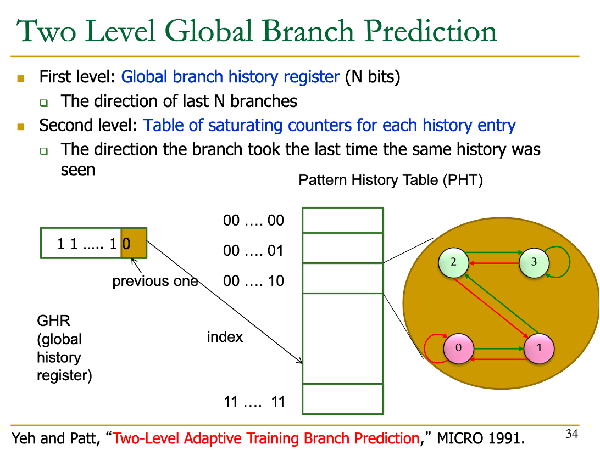
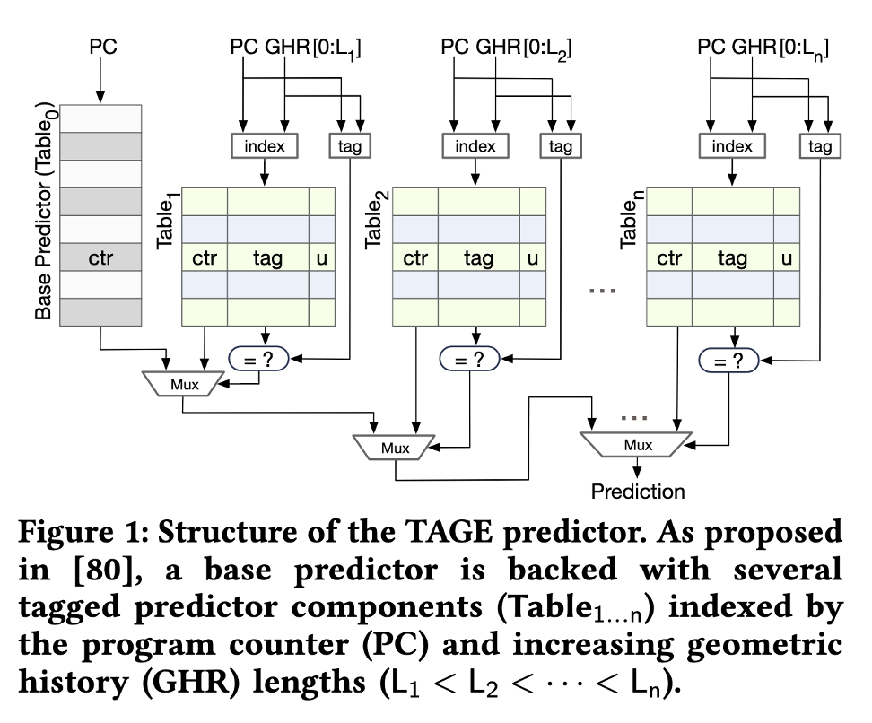
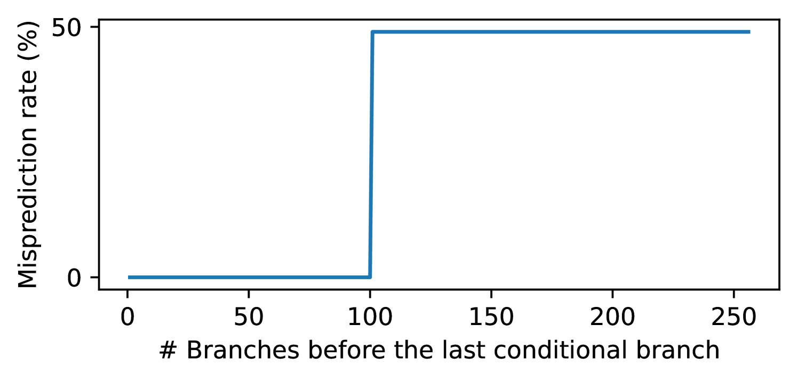
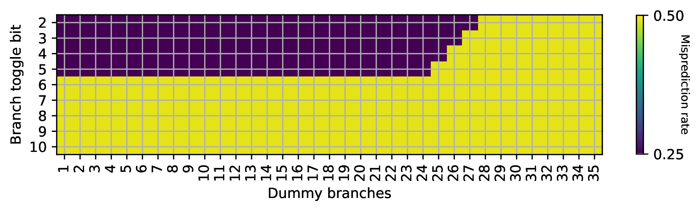
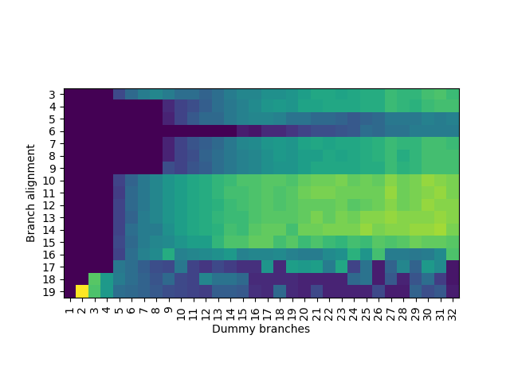
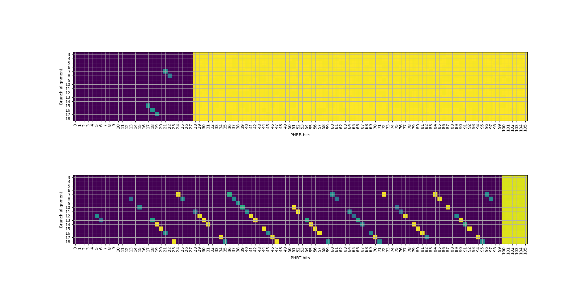
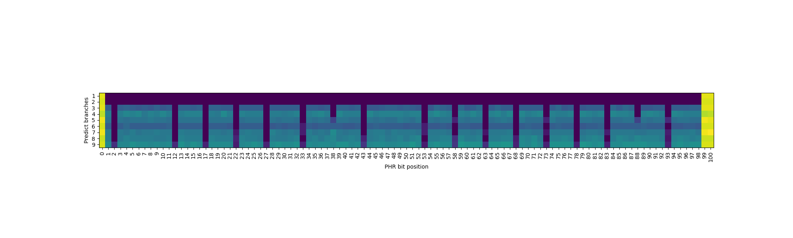

条件分支预测器逆向（以 Apple M1 Firestorm 为例）¶
背景¶
去年我完成了针对 Apple 和 Qualcomm 条件分支预测器（Conditional Branch Predictor）的逆向工程研究，相关论文已发表在 arXiv 上，并公开了源代码。考虑到许多读者对处理器逆向工程感兴趣，但可能因其复杂性而望而却步，本文将以 Apple M1 Firestorm 为例，详细介绍条件分支预测器的逆向工程方法，作为对原论文的补充说明。
背景知识¶
首先介绍一些背景知识。要逆向工程条件分支预测器，需要先了解其工作原理。条件分支预测器的基本思路是：
- 条件分支的跳转行为（跳转或不跳转）通常是高度可预测的
- 预测器的输入包括条件分支的地址，以及近期执行的若干条分支的历史记录；输出则是预测该条件分支是否跳转
为了在硬件上实现这一算法，处理器会维护一个预测表，表中每一项包含一个 2 位饱和计数器，用于预测跳转方向。查表时，系统会对条件分支地址以及近期执行的分支历史进行哈希运算，使用哈希结果作为索引读取表项，然后根据计数器的值来预测分支的跳转方向。

（图源 CMU ECE740 Computer Architecture: Branch Prediction）
目前主流处理器普遍采用 TAGE 预测器，它在上述基础查表方法的基础上进行了重要改进：
- 观察到不同分支的预测所需的历史长度各不相同：有些分支无需历史信息即可准确预测，有些依赖近期分支的跳转结果，而有些则需要更久远的历史信息；
- 分支历史越长，可能的路径组合就越多，导致预测器训练过程变慢，训练期间的预测错误率较高，因此希望尽快收敛；
- 为满足不同分支对历史长度的需求，TAGE 设计了多个预测表，每个表使用不同长度的分支历史。多个表同时进行预测，当多个表都提供预测结果时（仅在 tag 匹配时提供预测），选择使用最长历史长度的预测结果。

（图源 Half&Half: Demystifying Intel’s Directional Branch Predictors for Fast, Secure Partitioned Execution）
因此，要逆向工程处理器的条件分支预测器，需要完成以下工作：
- 确定分支历史的记录方式：通常涉及分支地址和目的地址，通过一系列移位和异或操作，将结果存储在寄存器中；
- 确定 TAGE 算法的具体实现：包括表的数量、每个表的大小、索引方式以及使用的分支历史长度。
分支历史的逆向¶
第一步是逆向工程处理器记录分支历史的方式。传统教科书方法使用一个寄存器，每当遇到条件分支时记录其跳转方向（跳转记为 1，不跳转记为 0），每个分支占用 1 bit。然而，现代处理器（包括 Intel、Apple、Qualcomm、ARM 和部分 AMD）普遍采用 Path History Register 方法。这种方法设计一个长度为 \(n\) 的寄存器 \(\mathrm{PHR}\)，每当遇到跳转分支（包括条件分支和无条件分支）时，将寄存器左移，然后将当前跳转分支的地址和目的地址通过哈希函数映射，将哈希结果异或到移位寄存器中。用数学公式表示为：
\(\mathrm{PHR}_{\mathrm{new}} = (\mathrm{PHR}_{\mathrm{old}} \ll \mathrm{shamt}) \oplus \mathrm{footprint}\)
其中 \(\mathrm{footprint}\) 是通过分支地址和目的地址计算得到的哈希值。接下来的任务是确定 \(\mathrm{PHR}\) 的位宽、每次左移的位数，以及 \(\mathrm{footprint}\) 的计算方法。
历史长度¶
首先分析这个更新公式：它将最近的 \(\lceil n / \mathrm{shamt} \rceil\) 条跳转分支的信息压缩存储在 \(n\) 位的 \(\mathrm{PHR}\) 寄存器中。随着移位操作的累积，更早的分支历史信息对 \(\mathrm{PHR}\) 的贡献最终会变为零。
第一个实验的目标是确定 \(\mathrm{PHR}\) 能够记录多少条最近分支的历史。具体方法是构建一个分支历史序列：
- 第一个条件分支：以 50% 的概率随机跳转或不跳转；
- 中间插入若干条无条件分支；
- 最后一个条件分支：跳转方向与第一个条件分支相同。
接下来分析两种情况：
- 如果在预测最后一个条件分支时，分支历史 \(\mathrm{PHR}\) 仍然包含第一个条件分支的信息，预测器应该能够准确预测最后一个条件分支的方向；
- 如果中间的无条件分支数量足够多，使得第一个条件分支的跳转信息对预测最后一个条件分支时的 \(\mathrm{PHR}\) 没有影响，预测器只能以 50% 的概率进行正确预测。
通过构造上述程序，调整中间无条件分支的数量，并使用性能计数器统计分支预测错误率，可以找到一个临界点。当无条件分支数量超过这个阈值时，第二个条件分支的错误预测率会从 0% 上升到 50%。这个临界点对应 \(\mathrm{PHR}\) 能够记录的分支历史数量，即 \(\lceil n / \mathrm{shamt} \rceil\)。
经过测试：

# 第一列：第二步插入的无条件分支数量加一
# 第二列到第四列：分支预测错误概率的 min/avg/max
# 第五列：每次循环的周期数
size,min,avg,max,cycles
97,0.00,0.00,0.01,216.87
98,0.00,0.00,0.01,221.02
99,0.00,0.00,0.01,225.18
100,0.00,0.00,0.01,229.17
101,0.45,0.50,0.53,331.97
102,0.47,0.50,0.54,336.27
103,0.46,0.50,0.54,339.85
测试结果表明阈值为 100：在 Apple M1 Firestorm 上，最多可以记录最近 100 条分支的历史信息。
分支预测错误率是怎么测量的？
处理器内置了性能计数器，会记录分支预测错误次数。在 Linux 上，可以用 perf 子系统来读取；在 macOS 上，可以用 kpep 私有 API 来获取。我开源的代码中对这些 API 进行了封装，可以实现跨平台的性能计数器读取。更进一步，我们还逆向了 Qualcomm Oryon 的针对条件分支的预测错误次数的隐藏性能计数器用于后续的实验。
分支地址 B 的贡献¶
接下来需要推测 \(\mathrm{footprint}\) 的计算方法，即分支地址和目的地址如何参与 \(\mathrm{PHR}\) 的更新过程。约定分支地址记为 \(B\)（Branch 的首字母），目的地址记为 \(T\)（Target 的首字母），用 \(B[i]\) 表示分支地址从低到高第 \(i\) 位（下标从 0 开始）的值，\(T[i]\) 同理。假设 \(\mathrm{footprint}\) 的每一位都由若干个 \(B[i]\) 和 \(T[i]\) 通过异或运算得到。
分支指令本身占用了多个字节，那么分支地址指的是哪一个字节的地址呢？
经过测试，AMD64 架构下，分支地址用的是分支指令最后一个字节的地址，而 ARM64 架构下，分支指令用的是分支指令第一个字节的地址。这大概是因为 AMD64 架构下分支指令是变长的，并且可以跨越页的边界；ARM64 则是定长的，并且不会跨越页的边界。
设计以下程序来推测某个 \(B[i]\) 如何参与 \(\mathrm{footprint}\) 的计算：
- 根据上面的分析，Apple M1 Firestorm 最多可以记录最近 100 条分支的历史信息，为了让 \(\mathrm{PHR}\) 进入一个稳定的初始值，执行 100 个无条件分支；
- 设计两条分支指令，第一条是条件分支，按 50% 的概率跳或不跳；第二条是无条件分支；这两条分支的分支地址只在 \(B[i]\) 上不同，其余的位都相同，目的地址相同；
- 执行若干条无条件分支，目的是把 \(B[i]\) 对 \(\mathrm{PHR}\) 的贡献往前移；
- 执行一条条件分支指令，其跳转方向与第二步中条件分支的方向一致。
约等于下面的代码：
// step 1.
// 100 jumps forward
goto jump_0;
jump_0: goto jump_1;
// ...
jump_98: goto jump_99;
jump_99:
// step 2.
int d = rand();
// the follow two branches differ in B[i]
// first conditional branch, 50% taken or not taken
if (d % 2 == 0) goto target;
// second unconditional branch
else goto target;
target:
// step 3.
// variable number of jumps forward
goto varjump_0;
varjump_0: goto varjump_1;
// ...
varjump_k: goto last;
// step 4.
// conditional branch
last:
if (d % 2 == 0) goto end;
end:
第二步中条件分支跳转与否，会影响分支历史中 \(B[i]\) 一个位的变化，它会经过哈希函数，影响到 \(\mathrm{footprint}\) 当中，进而异或到 \(\mathrm{PHR}\) 当中。通过调整第三步执行的无条件分支个数，可以把 \(B[i]\) 对 \(\mathrm{PHR}\) 的影响左移到不同的位置。如果 \(B[i]\) 对 \(\mathrm{PHR}\) 造成了影响，就可以正确预测最后一条条件分支指令的方向。当左移的次数足够多，就会使得 \(B[i]\) 对 \(\mathrm{PHR}\) 的贡献为零，那么对最后一条条件分支指令的方向预测只有 50% 的正确率。在 Apple M1 Firestorm 上测试，得到如下结果：

横坐标 Dummy branches 指的是上面第三步插入的无条件分支的个数，纵坐标 Branch toggle bit 代表修改的是具体哪一个 \(B[i]\)，颜色对应分支预测的错误率，浅色部分对应最后一条分支只能正确预测 50%，深色部分对应最后一条分支总是可以正确预测。
从这个图可以得到什么信息呢？首先观察 \(B[2]\) 对应的这一行，可以看到它确实参与到了 \(\mathrm{PHR}\) 的计算当中，但是，仅仅经过 28 次移位，这个贡献就被移出了 \(\mathrm{PHR}\)，为了保留在 \(\mathrm{PHR}\) 内，最多移动 27 次。类似地，在移出 \(\mathrm{PHR}\) 之前，\(B[3]\) 最多移动 26 次，\(B[4]\) 最多移动 25 次，\(B[5]\) 最多移动 24 次。
但实际上，这些 \(B\) 是同时进入 \(\mathrm{PHR}\) 的：这暗示了，它们对应了 \(\mathrm{footprint}\) 的不同位置。如果某个 \(B[i]\) 出现在 \(\mathrm{footprint}\) 更高位的地方，它也会进入 \(\mathrm{PHR}\) 更高位的地址，经过更少的移位次数就会被移出 \(\mathrm{PHR}\)；反之，如果 \(B[i]\) 出现在 \(\mathrm{footprint}\) 更低位的地方，它能够在 \(\mathrm{PHR}\) 中停留更长的时间。
根据上面的实验，可见 \(B[5], B[4], B[3], B[2]\) 参与到了 \(\mathrm{footprint}\) 计算当中，而 \(B\) 其他的位则没有。但比较奇怪的是，\(\mathrm{PHR}\) 理应可以记录最近 100 条分支的信息，但实际上只观察到了 28。所以一定另外有别的信息。
目的地址 T 的贡献¶
刚刚测试了 \(B\)，接下来测试 \(T\) 各位对 \(\mathrm{PHR}\) 的贡献，方法类似：
- 为了让 \(\mathrm{PHR}\) 进入一个稳定的初始值，执行 100 个无条件分支；
- 设计一个间接分支，根据随机数，随机跳转到两个不同的目的地址，这两个目的地址只在 \(T[i]\) 上不同，其余的位都相同，分支地址相同；
- 执行若干条无条件分支，目的是把 \(T[i]\) 对 \(\mathrm{PHR}\) 的贡献往前移；
- 执行一条条件分支指令，其跳转方向取决于第二步中间接分支所使用的随机数。
约等于下面的代码：
// step 1.
// 100 jumps forward
goto jump_0;
jump_0: goto jump_1;
// ...
jump_98: goto jump_99;
jump_99:
// step 2.
int d = rand();
// indirect branch
// the follow two targets differ in T[i]
auto targets[2] = {target0, target1};
goto targets[d % 2];
target0:
// add many nops
target1:
// step 3.
// variable number of jumps forward
goto varjump_0;
varjump_0: goto varjump_1;
// ...
varjump_k: goto last;
// step 4.
// conditional branch
last:
if (d % 2 == 0) goto end;
end:
在 Apple M1 Firestorm 上测试，得到如下结果：

为了测试 T[31]，岂不是得插入很多个 NOP，一方面二进制很大，其次还要执行很长时间？
是的，所以这里在测试的时候，采用的是类似 JIT 的方法，通过 mmap MAP_FIXED 在内存中特定位置分配并写入代码，避免了用汇编器生成一个巨大的 ELF。同时，为了避免执行大量的 NOP，考虑到前面已经发现 \(B[6]\) 或更高的位没有参与到 \(\mathrm{PHR}\) 计算当中，所以可以添加额外的一组无条件分支来跳过大量的 NOP，它们的目的地址相同，分支地址低位相同，因此对 PHR 不会产生影响。对应的代码大概是：
// step 1.
// 100 jumps forward
goto jump_0;
jump_0: goto jump_1;
// ...
jump_98: goto jump_99;
jump_99:
// step 2.
int d = rand();
// indirect branch
// the follow two targets differ in T[i]
auto targets[2] = {target0, target1};
goto targets[d % 2];
target0:
// skip over nops, while keeping B[5:2]=0
goto target2;
// add many nops
target1:
goto target2;
target2:
// step 3.
// variable number of jumps forward
goto varjump_0;
varjump_0: goto varjump_1;
// ...
varjump_k: goto last;
// step 4.
// conditional branch
last:
if (d % 2 == 0) goto end;
end:
由此我们终于找到了分支历史最长记录 100 条分支是怎么来的：\(T[2]\) 会经过 \(\mathrm{footprint}\) 被异或到 \(\mathrm{PHR}\) 的最低位，然后每次执行一个跳转的分支左移一次，直到移动 100 次才被移出 \(\mathrm{PHR}\)。类似地，\(T[3]\) 只需要 99 次就能移出 \(\mathrm{PHR}\)，说明 \(T[3]\) 被异或到了 \(\mathrm{PHR}[1]\)。依此类推，可以知道涉及到 \(T\) 的 \(\mathrm{footprint} = T[31:2]\)，其中 \(T[31:2]\) 代表一个 30 位的数，每一位从高到低分别对应 \(T[31], T[30], \cdots, T[2]\)。
小结¶
那么，问题来了，前面测试 \(B\) 的时候，移位次数那么少，明显少于 \(T\) 的移位次数。这有两种可能：
- 硬件上只有一个 \(\mathrm{PHR}\) 寄存器，然后 \(T[31:2]\) 被异或到 \(\mathrm{PHR}\) 的低位，而 \(B[5:2]\) 被异或到 \(\mathrm{PHR}\) 的中间的位置；
- 硬件上有两个 \(\mathrm{PHR}\) 寄存器，其中一个是 100 位，它的 \(\mathrm{footprint} = T[31:2]\)，记为 \(\mathrm{PHRT}\)；另一个是 28 位，它的 \(\mathrm{footprint} = B[5:2]\)，记为 \(\mathrm{PHRB}\)。
经过后续的测试，基本确认硬件实现的是第二种。用数学公式来表达：
\(\mathrm{PHRT}_{\mathrm{new}} = (\mathrm{PHRT}_{\mathrm{old}} \ll 1) \oplus \mathrm{T}[31:2]\)
\(\mathrm{PHRB}_{\mathrm{new}} = (\mathrm{PHRB}_{\mathrm{old}} \ll 1) \oplus \mathrm{B}[5:2]\)
有意思的是，在我的论文发表后不久，在 Apple 公开的专利 Managing table accesses for tagged geometric length (TAGE) load value prediction 当中，就出现了相关的表述，证明了逆向结果的正确性。
按照这个方法，我还逆向了 Apple、Qualcomm、ARM 和 Intel 的多代处理器的分支历史的记录方法，并进行了公开，供感兴趣的读者阅读，也欢迎读者将测试代码移植到更多处理器上，并贡献对其逆向的结果。
TAGE 表的逆向¶
接下来，把目光转向 TAGE 表的逆向。TAGE 表和缓存的结构类似，也是一个多路组相连的结构，通过 index 访问若干路，然后对每一路进行 tag 匹配，匹配正确的那一路提供预测。TAGE 在预测的时候，输入是历史寄存器，也就是上面逆向得到的 \(\mathrm{PHRT}\) 和 \(\mathrm{PHRB}\)，以及分支的地址，目前这两个输入都是可控的。为了避免多个表同时提供预测，首先来逆向工程使用分支历史最长的表的参数：它的容量是多少，index 是如何计算的，tag 是如何计算的，以及几路组相连。
怎么保证是使用分支历史最长的表提供预测呢？其实还是利用分支历史的特性，把随机数注入到 \(PHR\) 当中，例如前面的间接分支，让两个目的地址只在 \(T[2]\) 上不同：
// add some unconditional jumps to reset phr to some constant value
// 100 jumps forward
goto jump_0;
jump_0: goto jump_1;
// ...
jump_98: goto jump_99;
jump_99:
// inject
int d = rand();
// indirect branch
// the follow two targets differ in T[2]
auto targets[2] = {target0, target1};
goto targets[d % 2];
target0:
// add nop here
target1:
// add some unconditional jumps to shift the injected bit left
goto varjump_0;
varjump_0: goto varjump_1;
// ...
varjump_k: goto last;
last:
根据前面的分析，\(T[2]\) 会被异或到 \(\mathrm{PHRT}\) 的最低位上，每执行一次无条件分支，就左移一位。因此，通过若干个无条件分支，可以把 d % 2 这个随机数注入到 \(\mathrm{PHRT}\) 的任意一位上。之后我们还会很多次地进行这种随机数的注入。
把随机数注入到 \(\mathrm{PHRT}\) 高位以后，再预测一个根据随机数跳转或不跳转的分支，就可以保证它只能由使用分支历史最长的表来进行预测。
逆向工程 PC 输入¶
首先，我们希望推断 PC 是如何参与到 index 或 tag 计算当中的。通常，TAGE 只会采用一部分的 PC 位来参与到 index 或 tag 计算当中。换句话说，如果两个分支在 PC 上不同的部分，并没有参与到 index 或 tag 计算当中，那么 TAGE 是无法区分这两条分支的。如果这两个分支跳转方向是相反的，并且用相同的 PHR 进行预测，那么一定会出现错误的预测。思路如下：
- 用 100 个无条件分支，保证 PHR 变成一个确定的值；
- 注入随机数
d % 2到 PHRT，并移动到高位（例如 \(PHRT[99]\)），使用前面所述的方法； - 执行两个条件分支，它们在分支地址上只有一位 \(PC[i]\) 不同，它们的跳转条件相反，当第一个条件分支不跳转的时候，会执行第二个条件分支，它总是会跳转。
对应代码类似于：
// step 1. inject phrt
int d = rand();
inject_phrt(d % 2, 99);
// step 2. a pair of conditional branches with different direction
// their PC differs in one bit
if (d % 2 == 0) goto end;
if (d % 2 == 1) goto end;
end:
经过测试，PC 的输入是 \(PC[18:2]\)，其余的没有。
逆向工程相连度和 index 函数的 PC 输入¶
接下来是比较复杂的一步，同时逆向工程表的相连度和 index 函数的 PC 输入。这是因为，这两部分是紧密耦合的：只有知道了相连度，才能知道预测出来的分支数对应几个 set；但不知道 index 函数，又无法控制分支被分配到几个 set 当中。首先，为了避免 PHR 的干扰，还是只注入一个随机数到 \(PHRT[99]\) 上（事实上，\(PHRT[99]\) 不是随便选择的，而是需要在 index 函数当中，但通过测试可以找到满足要求的位）。其次，构造一系列分支，它们的地址满足：第 i 条分支（i 从 0 开始）的分支地址是 \(i2^k\)，其中 \(k\) 是接下来要遍历的参数。当 \(k=3\) 时，分支会被放到 0x0, 0x8, 0x10, 0x18, 0x20 等等的地址，涉及到的 PC 的位数随着分支数的增加越来越多。接下来，我们来分类讨论：
- 假如涉及到的 PC 的位都在 tag 中，并没有出现在 index 中：那么这些分支都会被映射到同一个 set 内，一旦分支数量超出了相连度，就会出现预测错误。
- 假如涉及到的 PC 的位有一部分出现在了 index 中：那么每有一个 PC 位出现在 index 中，这些分支可以被分配到的 set 数量就翻倍，直到这些 set 都满了以后，才会出现预测错误。
- 假如涉及到的 PC 的位有一部分超出了 PC 输入的范围（如前面逆向工程得到的 \(PC[18:2]\)）：那么超出输入的部分地址会被忽略，使得 set 内出现冲突。
实验结果如下图：

纵坐标就是上面的 \(k\)，横坐标是测试的条件分支数，颜色表示预测的错误率。当颜色从深色变浅，就说明出现了预测错误。观察：
- \(PC[3]\) 的情况下，只能预测 4 个分支，而 \(PC[4]\) 或 \(PC[5]\) 可以预测 8 个分支，暗示了四路组相连，然后 \(PC[4]\) 和 \(PC[5]\) 对应到了两个 set，所以能够正确预测 8 个分支。
- \(PC[6]\) 的情况下，可以预测 16 个分支，对应 4 个 set；后续 \(PC[7]\) 和 \(PC[8]\) 又可以预测 8 个分支，对应 2 个 set；意味着 \(PC[6]\) 在 index 当中，给 \(PC[4]\) 和 \(PC[5]\) 提供了两倍的 set；\(PC[9]\) 在 index 当中，给 \(PC[6]\)、\(PC[7]\) 和 \(PC[8]\) 提供了两倍的 set。
- 后续更高的 PC 位，没有受到 index 函数的影响，因此都是 4，直到最后超出 PC 输入范围。
这就说明它是四路组相连，PC[6] 和 PC[9] 参与到了 index 函数当中。
下面给读者一个小练习，下面是在 Qualcomm Oryon 上测得的结果，可以看到，它噪声比较大，你能推断出它是几路组相连，有哪些 PC 参与到了 index 计算吗？

揭晓答案
四路组相连，\(PC[6]\) 和 \(PC[7]\) 参与到了 index 函数。
那么，这种测试是怎么构造的呢？即需要用相同的 PHR 去预测 \(PC=i2^k\) 的多条分支。思路比较复杂：
- 首先执行一条间接分支，目的地址是 \(i2^{k-1}\)，那么它对 PHRT 的贡献是 \(\mathrm{PHRT}_1 = (\mathrm{PHRT}_0 \ll 1) \oplus (i2^{k-3})\)；
- 接下来，在 \(i2^{k-1}\) 的位置，再执行一条直接分支，目的地址是 \(i2^k\)，那么它对 PHRT 的贡献是 \(\mathrm{PHRT}_2 = (\mathrm{PHRT}_1 \ll 1) \oplus (i2^{k-2}) = (((\mathrm{PHRT}_0 \ll 1) \oplus (i2^{k-3})) \ll 1) \oplus (i2^{k-2}) = \mathrm{PHRT}_0 \ll 2\)。
可见经过两步以后，PHRT 是保持不变的。针对 PHRB，只要 \(i2^{k-1}\) 没有涉及到 \(PC[5:2]\)，就能保证相同。那么如果 \(k\) 足够小，也有办法：
- 首先执行一条间接分支，目的地址是 \(i2^{k-1}\)；
- 接下来执行大量的 NOP，使得 \(B\) 的低位等于 0，然后再执行一条间接分支，目的地址是 \(i2^k\)。
因此我们总是可以通过两次分支，实现用相同的 PHR 预测不同 PC 上的多条分支。
逆向工程 tag 函数¶
接下来，进行 tag 函数的逆向。为了逆向 tag 函数，我们希望能够找到两个位在 tag 函数中有异或的关系，那么如果这两个位同时设为 0，或者同时设为 1，其异或结果都等于 0，使得计算出来的 tag 函数相同，如果此时 index 还相同，那么预测器就无法区分这两种情况。
为了利用这一点，生成两个 0 到 1 的随机数 \(k\) 和 \(l\)，分别把它们注入到 PC、PHRB 或者 PHRT 当中，去预测一个条件分支，其跳转与否取决于 \(k\) 的值（论文中有个小 typo）。如果 \(k\) 和 \(l\) 在 tag 函数中有异或关系，那么预测器总会预测错误。
实验结果大致如下，横纵坐标表示注入哪一个位，颜色代表预测错误率，深色意味着预测错误，也就是找到了一组异或关系：


其中有一些异或关系，因为对应的位在 index 中出现的缘故，导致没有显现出来。根据已知的异或关系外推，可以得到如下的 tag 计算公式：
- PC[7] xor PHRT[0,12,...,96] xor PHRB[8,21]
- PC[8] xor PHRT[1,13,...,97] xor PHRB[9,22]
- PC[9] xor PHRT[2,14,...,98] xor PHRB[10,23,24]
- PC[10] xor PHRT[3,15,...,87,99] xor PHRB[11,12,25]
- PC[11] xor PHRT[4,16,...,88] xor PHRB[0,13,26]
- PC[12] xor PHRT[5,17,...,89] xor PHRB[1,14,27]
- PC[13] xor PHRT[6,18,...,90] xor PHRB[2,15]
- PC[14] xor PHRT[7,19,...,91] xor PHRB[3,16]
- PC[15] xor PHRT[8,20,...,92] xor PHRB[4,17]
- PC[16] xor PHRT[9,21,...,93] xor PHRB[5,18]
- PC[17] xor PHRT[10,22,...,94] xor PHRB[6,19]
- PC[18] xor PHRT[11,23,...,95] xor PHRB[7,20]
- PC[2:5]: 单独出现，不和其他位异或
那么，这里是怎么实现针对 PC、PHRT 和 PHRB 的注入的呢？针对 PHRT 的注入前面已经提到过，只需要一个间接分支：
// target differs in T[2]
auto targets[2] = {target0, target1};
goto targets[d % 2];
target0:
// add nop
target1:
PHRB 的注入就比较复杂了，例如要注入 \(B[2]=k\)，我们需要进行三次分支的跳转：
- 第一次跳转，\(B\) 相同，\(T[2]=k\)；
- 第二次跳转，\(B[2]=k\)，\(T[3]=k\)；
- 第三次跳转，\(B[2]=B[3]=k\), \(T\) 相同。
经过计算，可以发现前两次跳转对 PHRT 的抵消，第二次跳转的 \(B[2]\) 与第三次跳转的 \(B[3]\) 抵消，最后相当于只有最后一次跳转的 \(B[2]=k\) 对 PHRB 产生了贡献。
最复杂的是 PC 的注入，这次需要分情况讨论：
第一种情况是，要注入的 PC 位比较高，具体来说，是 \(PC[7]\) 或者更高的位数，此时我们可以很容易地避免引入对 PHRB 的贡献，因为它只考虑 \(B[5:2]\)：
- 第一次跳转，\(B\) 相同，\(T[6]=k\)；
- 第二次跳转，\(B[6]=k\) 但对 PHRB 没有贡献，\(T[7]=k\)。
那么两次跳转完以后，PHRB 不变，PHRT 的贡献被抵消掉，同时实现了 \(PC[7]=k\) 的注入。
第二种情况是，要注入的正好是 \(PC[6]\)，继续用上面的方法会发现 PHRB 无法抵消，这时候，需要引入第三次跳转：
- 第一次跳转，\(B\) 相同，\(T[3]=k\)；
- 第二次跳转，\(B[3]=k\)，\(T[5]=T[4]=k\)；
- 第三次跳转，\(B[4]=k\)，\(T[6]=k\)。
验算可以发现，PHRB 和 PHRT 的贡献全都被抵消，成功注入 \(PC[6]=k\)。
最后来看要注入的 PC 更低的情况，例如要注入 \(PC[3]=k\)，还是用三次跳转：
- 第一次跳转，\(B\) 相同，\(T[2]=k\)；
- 第二次跳转，\(B[2]=k\)，\(T[2]=T[3]=k\)；
- 第三次跳转，\(B[3]=k\)，\(T[3]=k\)。
这样就成功注入 \(PC[3]=k\)。
那么 PC 的注入就完成了，只有 \(PC[2]\) 没有找到合适的方法来注入。
逆向工程 index 函数¶
相连度和 tag 函数已知，接下来，让我们逆向工程最后的 index 函数。逆向的思路是这样的：
- 通过前面的逆向，发现 \(PC[5:2]\) 是独立出现在 tag 函数当中，并且没有出现在 index，所以我们很容易可以构造出多个分支，它们的 tag 不同；
- 进一步，构造两组条件分支，每组都有四个条件分支，因为是四路组相连，如果这两组分别映射到两个 set 当中，就可以正确预测；反之，如果被映射到同一个 set 当中，就会预测错误；
- 和之前类似，向 PC、PHRB 或 PHRT 注入两个随机数 \(k\) 和 \(l\)，然后预测两组共八个条件分支，这些条件分支的跳转方向都是
k xor l； - 如果 \(k\) 和 \(l\) 注入的位同时出现在 index 函数当中，但是没有异或关系，那么这八个条件分支可以正确地被预测；
- 如果 \(k\) 和 \(l\) 注入的位同时出现在 index 函数当中，并且有异或关系，那么这八个条件分支会被映射到同一个 set 内，最多只能正确预测其中四个分支；
- 如果 \(k\) 和 \(l\) 注入的位至少出现一个在 tag 函数当中，那么一个分支会在同一个 set 内占用两项，导致最多只能正确预测其中两个分支。
注入 \(PC[9]\) 和 \(PHRT[i]\) 的实验结果如下：

结合上面的讨论，可以知道：
- PC[9] 和 PHRT[38] 和 PHRT[88] 有异或关系
- PHRT[2]、PHRT[12]、PHRT[17]、PHRT[22]、PHRT[27]、PHRT[33]、PHRT[43]、PHRT[53]、PHRT[58]、PHRT[63]、PHRT[68]、PHRT[73]、PHRT[78]、PHRT[83]、PHRT[93] 在 index 当中，但是和 PC[9] 没有异或关系
实际上还有 PHRT[7] 和 PHRT[48] 也在 index 当中，但实际上测试的时候为了保证历史最长的表提供预测，还额外注入了 PHRT[99]，它与 PHRT[7] 和 PHRT[48] 有异或关系，所以在上图没有显现出来。
用类似的方法，去测试 PHRT 与 PHRT、PHRT 与 PHRB、PHRB 与 PHRB 之间的异或关系，就可以找到最终的 index 函数：
- PHRT[2] xor PHRT[43] xor PHRT[93]
- PHRT[7] xor PHRT[48] xor PHRT[99]
- PHRT[12] xor PHRT[63] xor PHRB[5]
- PHRT[17] xor PHRT[68] xor PHRB[10]
- PHRT[22] xor PHRT[73] xor PHRB[15]
- PHRT[27] xor PHRT[78] xor PHRB[20]
- PHRT[33] xor PHRT[83] xor PHRB[25]
- PHRT[38] xor PHRT[88] xor PC[9]
- PHRT[53] xor PHRT[58] xor PHRB[0]
- PC[6]
至此使用分支历史最长的表的逆向就完成了。接下来讨论一下，如何逆向工程分支历史更短的表。
逆向工程使用分支历史更短的 TAGE 表¶
前面提到，TAGE 在预测的时候，会选取提供预测的多个表中，所使用历史最长的那个表。那么，如果要测试使用历史第二长的表，应该怎么办呢？我们尝试了这些方法：
- 在使用历史更长的表里，预先插入一些表项，再去测试历史较短的表的情况，由于 TAGE 会利用它的 useful 计数器来进行新表项的分配，当历史更长的表里的表项的 useful 不为零，可以防止它被覆盖成新的内容，逼迫 TAGE 用历史更短的表来进行预测；
- 把多个表当成一个整体来考虑，比如在测试能够正常预测的分支数量的时候，得到的是多个表叠加的结果，再减去已知数量，可以得到历史比较短的表的信息；
- 在超出要测试的表的历史部分，注入大量随机数，例如要测试的一个表，只用到了历史的低 57 位，那就在更高的部分注入大量的随机数，那么历史最长的表能够提供预测的概率会非常小，从而逼迫 TAGE 用当前被测试的表来做预测。
通过这些方法，我们成功地逆向出了 Firestorm 的剩下的 TAGE 表的信息：
有兴趣的读者可以试着自己复现一下，看看能不能得到对应的实验结果，然后从结果中分析出硬件的参数。有意思的是，我们逆向出来 Qualcomm Oryon 的分支预测器的大小（6 个表一共 80KB 的空间），与官方在 Hot Chips 上公开的是一致的。
总结¶
我们通过一系列方法，实现了对 Apple M1 Firestorm 的条件分支预测器的逆向，并且成功地把它应用到了设计基本一样的 Qualcomm Oryon 处理器上，为后续的研究提供了基础。
引用文献¶
- Dissecting Conditional Branch Predictors of Apple Firestorm and Qualcomm Oryon for Software Optimization and Architectural Analysis
- Half&Half: Demystifying Intel’s Directional Branch Predictors for Fast, Secure Partitioned Execution